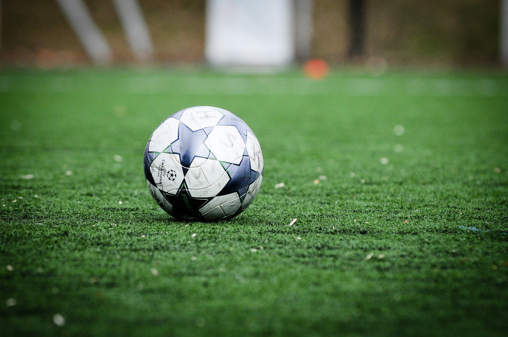

Chelsea Football Club is a professional football club based in Fulham, West London, England. They compete in the Premier League, the top tier of English football. Founded in 1905, the team play their home games at Stamford Bridge.[4] The club won their first major honour, the League championship, in 1955. They won the FA Cup for the first time in 1970, won their first European honour, the Cup Winners' Cup, in 1971, and became the third English club to win the Club World Cup in 2022.
